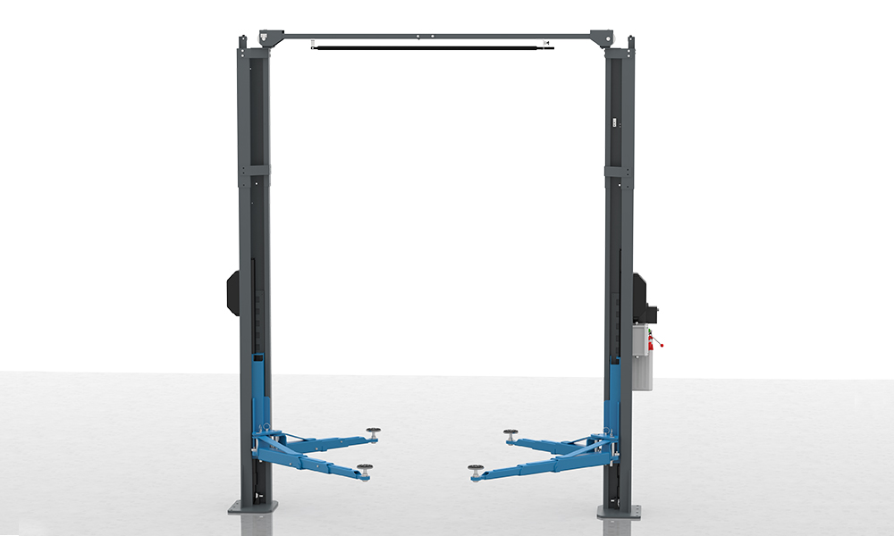

Kaksipilarinostin HTL-3940D
Saatavilla
2790 sis alv
Tarjous
2 690 € sis. alv
- Lattiavapaa asymmetrinen malli
- Sähkölukot
- Nostokyky 4 000 kg
- Kokonaiskorkeus 4 200 mm
- Kokonaisleveys 3 400 mm
- Lyhyemmät nostovarret 685–1 100 mm
- Pidemmät nostovarret 766–1 495 mm